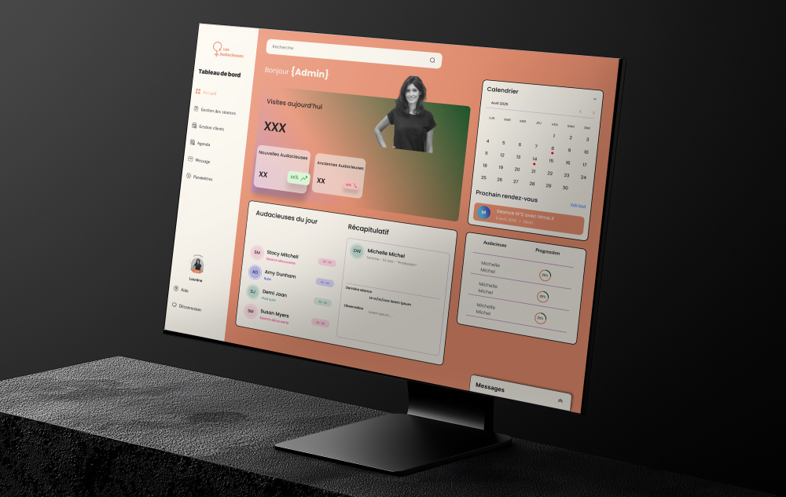
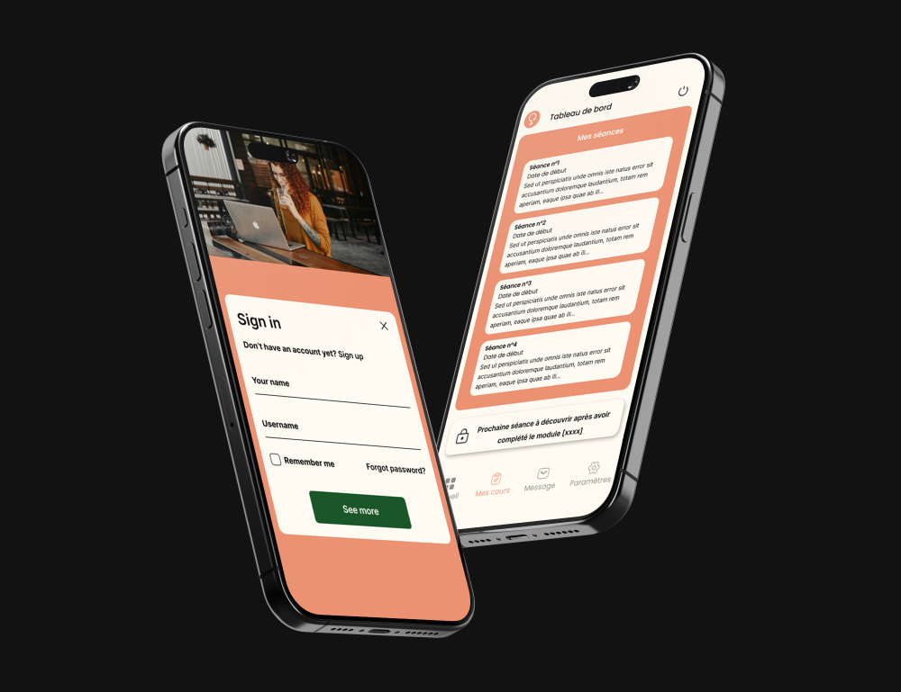

Mission de développement pour Les Audacieuses. Création d’une application web et mobile dédiée au suivi des clientes, avec gestion des modules, des séances et un espace d’échange, connectée via une API PHP sur mesure.

Les Audacieuses est un projet porté par une psychologue indépendante, souhaitant digitaliser l’accompagnement de ses clientes. Jusqu’alors, l’organisation des modules, la gestion des rendez-vous et le suivi des échanges étaient assurés manuellement à travers l’outil Notion. Cette méthode atteignait ses limites en termes de personnalisation, de clarté et de charge de travail.
L’objectif du projet était de concevoir une solution sur mesure, déclinée à la fois en application web et mobile, permettant à la psychologue de gérer son activité, tout en offrant à ses clientes un espace personnel complet. L’application devait centraliser les modules de suivi, les informations de séance, les messages et les statistiques de progression.
Le projet a couvert l’ensemble des étapes : conception, modélisation de la base de données, développement de l’API, développement frontend web et mobile, jusqu’à la mise en production.
La conception de l’application a débuté par la réalisation des maquettes sur Figma. Deux environnements ont été pensés : une interface dédiée aux clientes, intuitive et agréable à utiliser, et une interface administratrice, plus orientée vers la gestion et le suivi. En parallèle, la base de données a été modélisée sur Looping afin d’assurer une structure cohérente et évolutive. Elle permet de gérer les utilisateurs, leurs modules, leurs séances, les échanges de messages, ainsi que l’évolution de leur progression. L’API a été développée en PHP afin de servir efficacement aussi bien l’application web que mobile.
L’application web est principalement destinée à l’administratrice. Elle permet de gérer l’ensemble des clientes, de créer et modifier des modules personnalisés, d’organiser les séances et de suivre l’évolution de chaque personne. Un tableau de bord complet a été développé pour centraliser les informations du jour, les rendez-vous à venir et les statistiques de progression. Le système de messagerie intégré permet de garder un lien direct avec chaque utilisatrice. L’interface a été développée en Angular et s’appuie sur l’API PHP pour toutes les opérations, de l’authentification à la gestion des données.
Angluar (front), Node.js (backend)

L’application mobile a été pensée pour les clientes. Développée avec Ionic et Angular, elle permet un accès rapide et fluide à l’ensemble des fonctionnalités : consultation des séances prévues, accès aux modules de travail en cours, suivi de la progression et messagerie directe. Une évolution est prévue pour intégrer un chatbot, afin de renforcer l’accompagnement entre les rendez-vous. L’API utilisée est la même que celle de l’application web, assurant une cohérence des données et une synchronisation en temps réel entre les deux plateformes.
Ionic ( avec Angular)